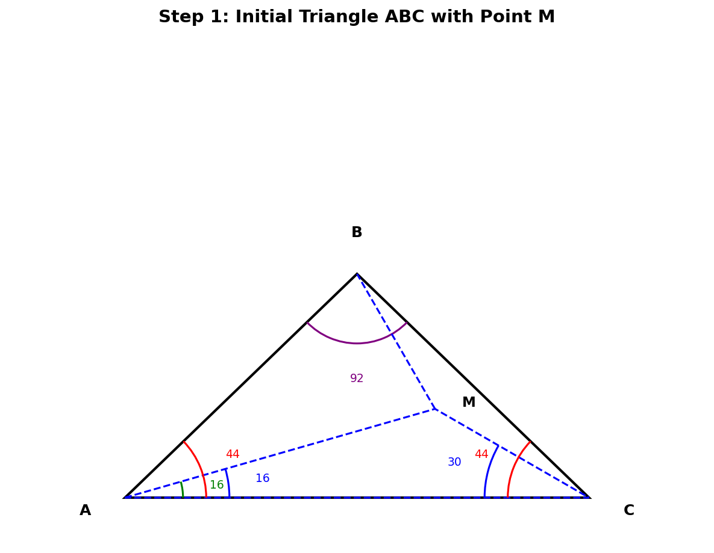
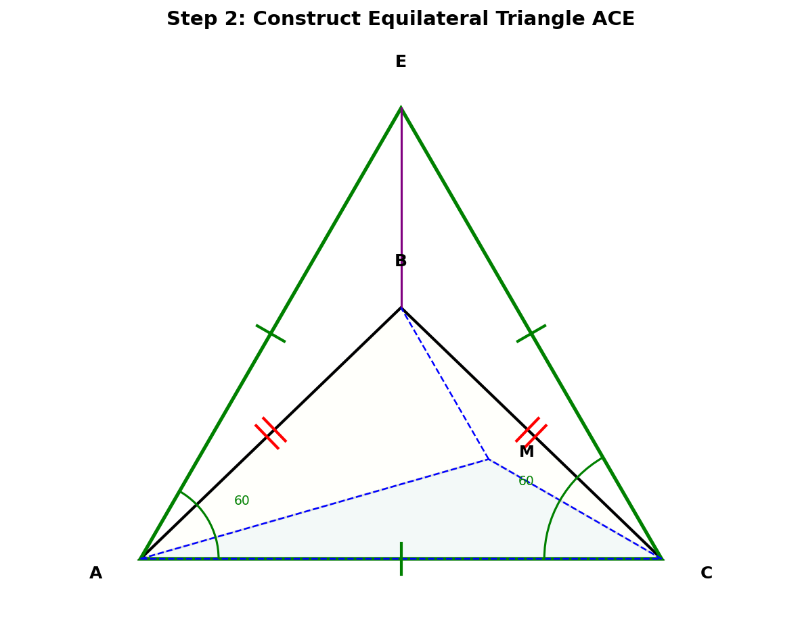
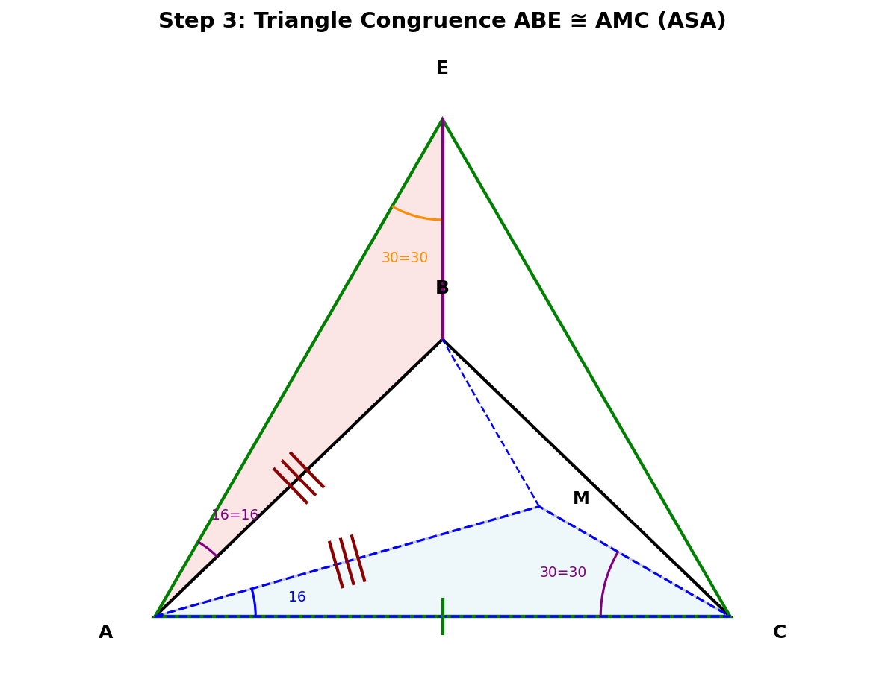
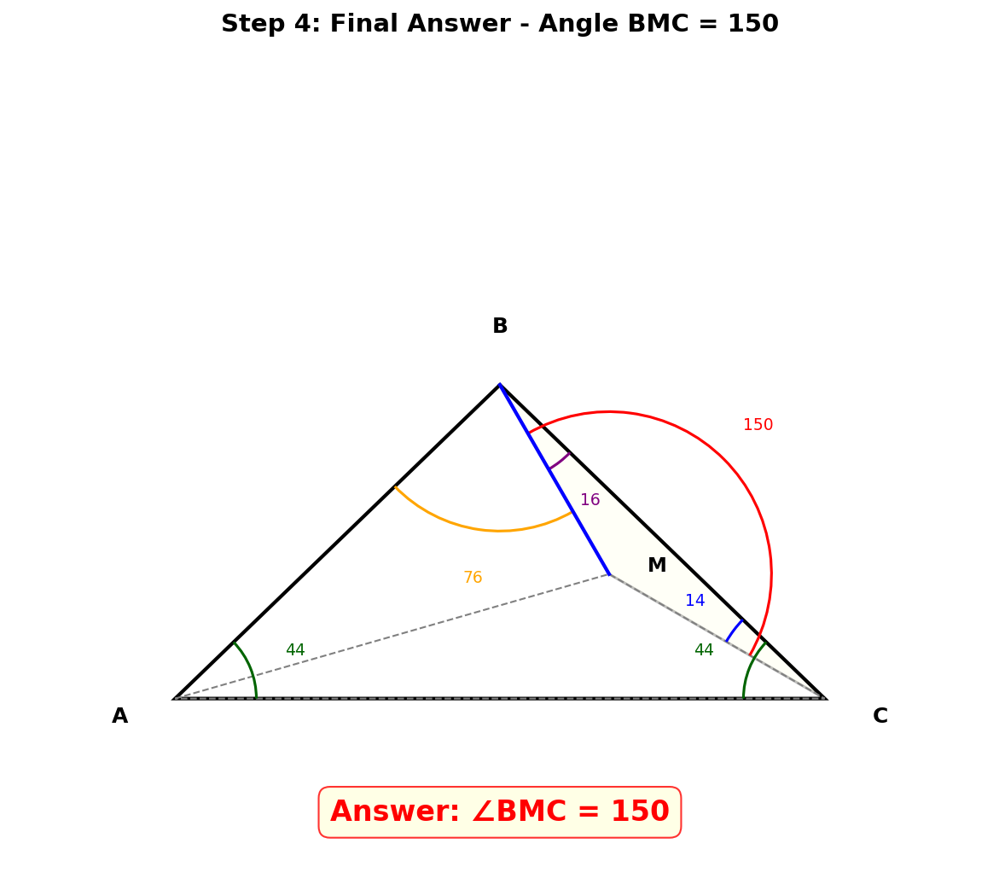

题 题目
在△ABC中，∠BAC = ∠BCA = 44°，点M为△ABC内一点，且∠MCA = 30°，∠MAC = 16°。
求：∠BMC 的度数

1 分析已知条件，计算所有已知角
从已知条件出发：
- • ∠BAC = ∠BCA = 44° → △ABC是等腰三角形（AB = BC）
- • ∠ABC = 180° - 44° - 44° = 92°
- • ∠BAM = ∠BAC - ∠MAC = 44° - 16° = 28°
- • ∠BCM = ∠BCA - ∠MCA = 44° - 30° = 14°
- • 在△AMC中：∠AMC = 180° - 16° - 30° = 134°
?
为什么要先计算这些角？
✓ 明确所有已知角度后，可以确定还缺什么信息。我们发现只需要求出∠MBC（或∠ABM），就能在△BMC中用内角和得到∠BMC。
?
等腰三角形有什么用？
✓ AB = BC 这个等边条件是后续构造辅助线和证明全等的关键。等腰三角形具有轴对称性，可以利用SSS全等。
?
能直接用内角和求∠BMC吗？
✗ 不行！在△BMC中有两个未知角（∠MBC和∠BMC），内角和只给一个方程，不够解两个未知数。需要其他方法确定∠MBC。
2 构造辅助线：作等边三角形

构造方法：
以AC为边，在AC上方（B同侧）作等边△ACE，连接BE。
- • AE = CE = AC（等边三角形三边相等）
- • ∠EAC = ∠ECA = 60°（等边三角形每个角都是60°）
注意：E在B的上方（因为等边三角形的高 > △ABC的高），B在等边△ACE的内部。
?
为什么要构造等边三角形？
✓ 等边三角形的60°角与题目中的角度有巧妙关系：∠EAC - ∠BAC = 60° - 44° = 16° = ∠MAC！这个巧合是证明全等的关键。
?
为什么在B同侧？
在B同侧构造，B在等边三角形内部，可以利用BE把∠AEC平分（因为SSS全等），得到∠AEB = 30°，这个角恰好等于∠MCA！
?
怎么想到这个构造？
这类"奇角"问题（角度为44°、16°、30°等不容易直接计算的值）的经典技巧就是构造等边三角形来制造全等条件。观察到60° - 44° = 16° = ∠MAC，这就暗示了构造方向。
3 证明△ABE ≅ △CBE（SSS）→ ∠AEB = 30°

证明 △ABE ≅ △CBE（SSS）：
- ① AB = CB（△ABC是等腰三角形，∠BAC = ∠BCA）
- ② AE = CE（△ACE是等边三角形）
- ③ BE = BE（公共边）
∴ △ABE ≅ △CBE（SSS）
由全等得：∠AEB = ∠CEB
又 ∠AEB + ∠CEB = ∠AEC = 60°
∴ ∠AEB = ∠CEB = 60° ÷ 2 = 30°
?
BE是什么线？
✓ BE是∠AEC的角平分线！因为△ABE ≅ △CBE，所以∠AEB = ∠CEB。同时，由于E和B都在AC的垂直平分线上（AE=CE, AB=CB），BE就在AC的垂直平分线上。
?
30°这个角有什么用？
关键！注意到 ∠AEB = 30° 恰好等于 ∠MCA = 30°！这为下一步的ASA全等创造了条件。
4 证明△ABE ≅ △AMC（ASA）→ AB = AM
比较△ABE和△AMC：
- ① ∠EAB = ∠EAC - ∠BAC = 60° - 44° = 16° = ∠MAC ✓
- ② AE = AC（等边三角形，AE = AC）✓
- ③ ∠AEB = 30° = ∠MCA ✓
∴ △ABE ≅ △AMC（ASA：角-边-角）
由全等得：AB = AM
推导∠ABM：
- • AB = AM → △ABM是等腰三角形
- • ∠BAM = 28°（第1步已算）
- • ∠ABM = ∠AMB = (180° - 28°) ÷ 2 = 76°
- • ∠MBC = ∠ABC - ∠ABM = 92° - 76° = 16°
?
为什么是ASA？三个条件分别对应什么？
✓ ASA = 角-边-角。在△ABE中：∠EAB=16°是A处的角，AE是夹边，∠AEB=30°是E处的角。在△AMC中：∠MAC=16°是A处的角，AC是夹边，∠MCA=30°是C处的角。两角及其夹边分别相等！
?
为什么AB = AM能推出∠ABM = 76°？
等腰三角形两底角相等！在△ABM中，AB = AM是两腰，∠BAM = 28°是顶角。两底角 = (180° - 顶角) ÷ 2 = (180° - 28°) ÷ 2 = 76°。
?
∠MBC = 16°这个结果漂亮吗？
✓ 非常漂亮！通过等边三角形的构造和两次全等，我们成功地求出了∠MBC = 16°，这正是解题中最关键的突破。
5 计算最终答案

在△BMC中，由三角形内角和：
∠BMC + ∠MBC + ∠MCB = 180°
∠BMC + 16° + 14° = 180°
∠BMC = 150°
验证（绕M点一周 = 360°）：
∠AMB + ∠BMC + ∠AMC = 76° + 150° + 134° = 360° ✓
✓ 解题思路总结
🎯 最终答案
∠BMC = 150°
📋 解题流程
1
计算所有已知角 → AB = BC（等腰），∠ABC = 92°，∠BAM = 28°
2
以AC为边在B同侧作等边△ACE，连接BE
3
△ABE ≅ △CBE (SSS) → ∠AEB = ∠CEB = 30°
4
△ABE ≅ △AMC (ASA) → AB = AM → △ABM等腰 → ∠ABM = 76°
5
∠MBC = 16°，∠BMC = 180° - 16° - 14° = 150°
📚 涉及知识点
等腰三角形性质
三角形内角和
等边三角形性质
全等三角形(SSS)
全等三角形(ASA)
辅助线构造
💡 解题技巧
- • 等边三角形构造：当题目出现等腰三角形且需要求复杂角度时，考虑在某条边上作等边三角形来制造全等条件
- • 两次全等：第一次SSS全等得到角度（∠AEB=30°），第二次ASA全等得到边（AB=AM），层层递进
- • "奇角"问题套路：观察60°与题目角度的差值（60° - 44° = 16° = ∠MAC），这暗示了构造方向
- • 验证意识：得出答案后检查绕M点一周 = 360°（76° + 150° + 134° = 360° ✓）